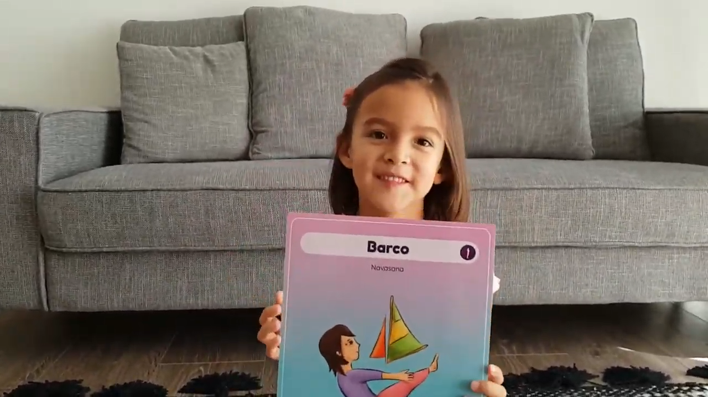

Seguimos en cuarentena y los vídeos que Luz ha preparado también. Por qué la energía de mi pequeña no decae y esto de las cámaras le va bien 🥰
Aquí les mostramos la 𝐏𝐨𝐬𝐭𝐮𝐫𝐚 𝐝𝐞𝐥 𝐁𝐚𝐫𝐜𝐨 𝐨 𝐍𝐚𝐯𝐚𝐬𝐚𝐧𝐚 ⛴. Un asana de equilibrio y fuerza, bueno para la salud pero también para la mente 🧠💪.
Algunos de sus beneficios son:
- Fortalece los abdominales.
- Fortalece los músculos de las caderas y la espalda para mantenerse en equilibrio.
- Los cuádriceps también hacen un gran esfuerzo.
- También hay tonificación de los brazos.
- Mejora la capacidad de atención y la concentración, puesto que es una postura de equilibrio.
- Mejora la coordinación.
Si les gusta el video ayúdenos con un like 👍para que más personas puedan verlo y otros niños y niñas también puedan jugar haciendo yoga 🧘🏻♀️🧘🏻♂️.
¡Lindo viernes y lindo fin de semana para todos!
Carmen y Luz